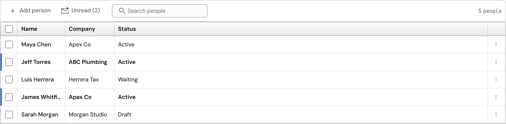
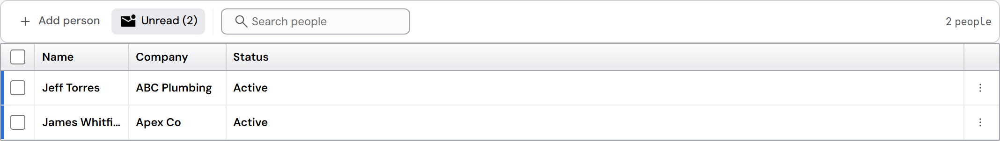
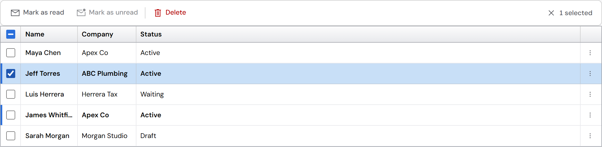
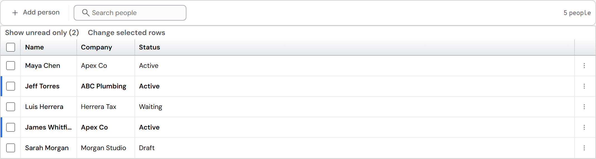
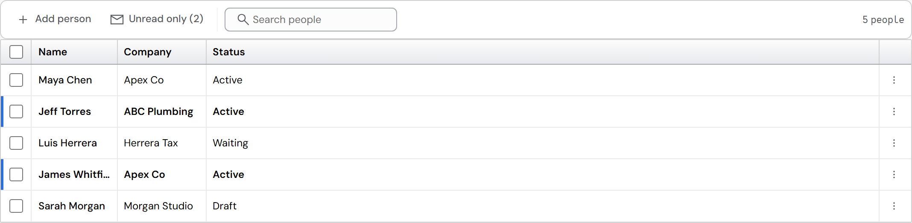
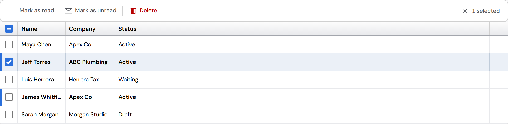
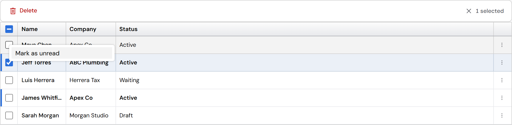

Unread: no text above the column headers (#287)
When a grid shows unread rows (bold, with the blue start bar), the DataGrid adds a row of its own between the command bar and the headers: "Show unread only (2)" and "Change selected rows". You said there should not be any text above the columns.
- Cause: the grid draws these two ghost buttons itself whenever unread is on (DataGridEngine.jsx, before the table). Their words are fixed English, and no setting moves or hides them.
- Already in place: the row menu has "Mark as read / Mark as unread"; the grid has unreadOnly and onUnreadOnlyChange, and reports the unread count.
Built · before and after



Today

A · A toggle in the command bar, and the marks in the selection commands (recommended)


B · A "Read status" quick filter
C · Row menu only

For every option
- The row above the headers is removed. The words go through the grid's strings (translatable).
- The grid gives the app the unread count and the two mark actions, so the app puts them in its CommandBar; a grid without a CommandBar keeps the row menu.
- (The "Mark as read" icon in the pictures is missing because "mail-open" is not a Plenix icon name; the build would use an existing one.)
Recommendation: A. It follows the CommandBar's own rule (an on/off setting is a toggle command) and how mail apps work: Outlook and Gmail put "Unread" with the list's filters and "Mark as read / unread" in the commands for selected messages and in each message's menu. B also works when an app has several filters; C hides the filter people use most.